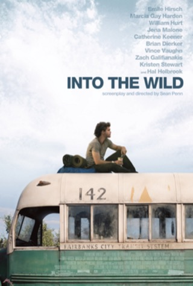

Into the Wild
In brief
A young college graduate abandons his comfortable life and journeys across the American West into the Alaskan wilderness.
- Directed by
- Sean Penn
- Country
- USA
- Year
- 2007
- Running time
- 150 minutes
- Slot
- Spotlight
- With
- Emile Hirsch, Vince Vaughn, William Hurt, Marcia Gay Harden, Catherine Keener, Hal Holbrook
- Guests
- Sean Penn, Emile Hirsch
- Screenings
- Thu Sep 13, 6:30 PM, Rafael
Source: Souvenir programme guide (page 12 of the PDF): Wayback Machine copy; Poster from Wikipedia